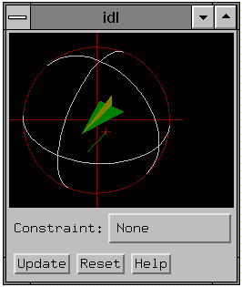

The CW_ARCBALL function creates a compound widget for intuitively specifying three-dimensional orientations.
The user drags a simulated track-ball with the mouse to interactively obtain arbitrary rotations. Sequences of rotations may be cascaded. The rotations may be unconstrained (about any axis), constrained to the view X, Y, or Z axes, or constrained to the object’s X, Y, or Z axis.
This widget is based on “ARCBALL: A User Interface for Specifying Three-Dimensional Orientation Using a Mouse,” by Ken Shoemake, Computer Graphics Laboratory, University of Pennsylvania, Philadelphia, PA 19104.
This widget can generate any rotation about any axis. Note, however, that not all rotations are compatible with the IDL SURFACE procedure, which is restricted to rotations that project the object Z axis parallel to the view Y axis.
This routine is written in the IDL language. Its source code can be found in the file cw_arcball.pro in the lib subdirectory of the IDL distribution.
Use the command:
WIDGET_CONTROL, id, GET_VALUE = matrix
to return the current 3x3 rotation matrix in the variable matrix .
You can set the arcball to new rotation matrix using the command:
WIDGET_CONTROL, id, SET_VALUE = matrix
after the widget is initially realized.
Result = CW_ARCBALL( Parent [, COLORS = array ] [, / FRAME ] [, LABEL = string ] [, RETAIN ={0 | 1 | 2}] [, SIZE = pixels ] [, TAB_MODE = value ] [, / UPDATE ] [, UNAME = string ] [, UVALUE = value ] [, VALUE = array ] )
This function returns the widget ID of the newly-created ARCBALL widget.
The widget ID of the parent widget.
A 6-element array containing the color indices to be used:
|
Colors[0] |
View axis color |
|
Colors[1] |
Object axis color |
|
Colors[2] |
XZ plane +Y side (body top) color |
|
Colors[3] |
YZ plane (fin) color |
|
Colors[4] |
XZ plane -Y side (body bottom) |
|
Colors[5] |
Background color |
For devices that are using indexed color (i.e., DECOMPOSED=0), the default value for COLORS is [1,7,2,3,7,0] , which yields good colors with the TEK_COLOR table: (white, yellow, red, green, yellow, black). For devices that are using decomposed color (i.e., DECOMPOSED=1), the default value is an array of corresponding decomposed (rather than indexed) colors: (white, yellow, red, green, yellow, black).
For more information on decomposed color, refer to the DECOMPOSED keyword to the DEVICE routine.
Set this keyword to draw a frame around the widget.
Set this keyword to a string containing the widget’s label.
Note: You can use language catalogs to internationalize this value with strings in particular languages.
Set this keyword to zero, one, or two to specify how backing store should be handled for the draw widget. RETAIN=0 specifies no backing store. RETAIN=1 requests that the server or window system provide backing store. RETAIN=2 specifies that IDL provide backing store directly. See Backing Store for details.
The size of the square drawable area containing the arcball, in pixels. The default is 192.
Set this keyword to one of the values shown in the table below to determine how the widget hierarchy can be navigated using the Tab key. The TAB_MODE setting is inherited by lower-level bases and child widgets unless it is explicitly set on an individual widget.
Note: It is not possible to tab to disabled (SENSITIVE=0) or hidden (MAP=0) widgets.
Valid settings are:
|
Value |
Description |
|
0 |
Disable navigation onto or off of the widget. This is the default. Child widgets automatically inherit the tab mode of the parent base as described in Inheriting the TAB_MODE Value . |
|
1 |
Enable navigation onto and off of the widget. |
|
2 |
Navigate only onto the widget. |
|
3 |
Navigate only off of the widget. |
Note: In widget applications on the UNIX platform, the Motif library controls what widgets are brought into and released from focus using tabbing. The TAB_MODE keyword value is always zero, and any attempt to change it is ignored when running a widget application on the UNIX platform. Tabbing behavior may vary significantly between UNIX platforms; do not rely on a particular behavior being duplicated on all UNIX systems.
Set this keyword to cause the widget will send an event each time the mouse button is released after a drag operation. By default, events are only sent when the “Update” button is pressed.
Set this keyword to a string that can be used to identify the widget in your code. You can associate a name with each widget in a specific hierarchy, and then use that name to query the widget hierarchy and get the correct widget ID.
To query the widget hierarchy, use the WIDGET_INFO function with the FIND_BY_UNAME keyword. The UNAME should be unique to the widget hierarchy because the FIND_BY_UNAME keyword returns the ID of the first widget with the specified name.
The “user value” to be assigned to the widget.
Set this keyword to a 3 x 3 array that will be the initial value for the rotation matrix. VALUE must be a valid rotation matrix (no translation or perspective) where TRANSPOSE(VALUE) = INVERSE(VALUE). This can be the upper-left corner of !P.T after executing the command
T3D, /RESET, ROTATE = [x,y,z].
The default is the identity matrix.
The widget ID returned by most compound widgets is actually the ID of the compound widget’s base widget. This means that many keywords to the WIDGET_CONTROL and WIDGET_INFO routines that affect or return information on base widgets can be used with compound widgets.
In addition, you can use the GET_VALUE and SET_VALUE keywords to WIDGET_CONTROL to obtain or set the 3 x 3 rotation matrix in the arcball widget.
See Creating a Compound Widget for a more complete discussion of controlling compound widgets using WIDGET_CONTROL and WIDGET_INFO.
Arcball widgets generate event structures with the following definition:
event = {ID:0L, TOP:0L, HANDLER:0L, VALUE:fltarr(3,3) }
The VALUE field contains the 3 x 3 array representing the new rotation matrix.
See the procedure ARCBALL_TEST , contained in the cw_arcball.pro file. To test CW_ARCBALL, enter the following commands:
.RUN cw_arcball
ARCBALL_TEST
This results in the following:
|
 |
|
Pre 4.0 |
Introduced |
|
6.1 |
Added TAB_MODE keyword |